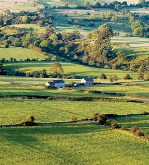
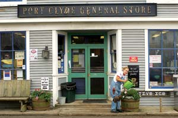
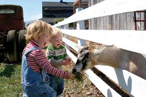
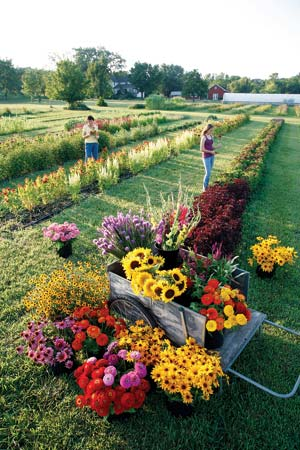
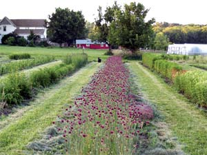

How To Find Your Dream Homestead
Follow this advice to find the property that’s just right for you.
By Dave Wortman
April/May 2008
Imagine your ideal patch of Mother Earth. Perhaps it’s a place where the sky and land are vast, where the soil is fertile for growing your own food, the trees grow tall, and your neighbors offer genuine small-town friendliness. There’s little crime or traffic, and all you hear at night is the rush of wind through the trees.
Now, imagine that someone’s willing to give it to you - free.
That’s precisely what the town of Anderson, in central Alaska, did in March 2007, when they attempted to lure potential transplants by offering 26 free, spruce-covered building lots. And each 1.3-acre lot had its own view of beautiful natural surroundings. In return, all the newcomers had to do was agree to build a home and stay awhile - not a bad bargain for those looking to head back to the land. And according to Anderson’s city clerk, Nancy Hollis, the plan has been successful, drawing people from all walks of life. “So far, the new land owners are fitting into our community nicely,” she says. (The free lots are taken as of this printing.)
For some, a dream homestead means secluded rural acreage. But for others, an ideal homestead may be in a small town, where you might find less expensive housing and a lot large enough for a garden, some fruit trees and a few chickens - plus the benefits of nearby community amenities. There are some locations where you can still find your dream homestead without breaking the bank. And with the fallout from the recent mortgage crisis, land prices - at least in some areas - are tumbling, offering an even better reason to jump into the game.
Navigating the Market
Anyone who has searched for affordable land near the nation’s major cities or in booming retirement and resort areas knows how challenging the process can be. Even some more remote rural areas, particularly in the fast-growing retirement and resort areas of the West, have experienced price spikes. “I am seeing land prices increase dramatically in southern Utah, northern Nevada, southern Idaho and eastern Oregon,” says John Allen, director of the Western Rural Development Center at Utah State University. And in many areas of high-cost states such as California, spiraling prices have put land well out of reach for many buyers.
But the picture is far different in other parts of rural America, and for those looking for a quiet country life, opportunities abound. Between July 2005 and July 2006, the population of the nation’s rural areas as a whole grew by just 0.6 percent. In rural parts of the American Plains (stretching from Texas to the Dakotas, east through Indiana, and across poor counties in the Mississippi Delta) many areas have seen a steady decline of population since the early 1900s. In the states of Kansas, Nebraska, Oklahoma, and North and South Dakota, 89 percent of the 2,421 cities and towns have fewer than 3,000 people - hundreds have fewer than 1,000 - and most have been hemorrhaging population for years. To turn the tide, local governments are often eager to entice newcomers to boost their tax base for schools and other essential services.
If you’re simply looking for a low-cost home, many of the same areas of the country where land is affordable offer good housing deals, too. “As recently as three years ago I was in northwestern Nebraska where you can buy a house in a small town for under $10,000,” says Steven Saltman of Land and Farm.com. Data from the U.S. Census Bureau indicates that home values in the Midwest and Deep South are among the most affordable in the country. While most economists don’t expect home prices to pick up until 2009, Dan Duffy, CEO of United Country Real Estate, the largest rural real estate company in the United States, says that rural homes remain a solid long-term investment. “Rural home values have steadily appreciated since the 1980s,” he says. “Rural homes tend to be less pricey and haven’t experienced a big run-up as we have seen in urban areas.”
Curtis Seltzer, a land consultant and author of How to be a Dirt Smart Buyer of Country Property, cautions buyers tempted by low cost or free land that it may be cheap for good reasons. “Rural land is cheap where there are negatives such as difficult climate, ruined aesthetics from activities like mining, environmental problems such as drought or pollution, or chronic problems such as high unemployment,” says Seltzer.
Giveaways Galore
To turn the tide of population decline, many Midwestern towns have turned to drastic measures - such as land giveaways - that offer options that are hard to pass up. As of mid-2006, Hazelton, N.D.; Hendrum, Minn.; Chugwater, Wyo.; Kenesaw, Neb.; and 21 Kansas towns were offering free building lots to newcomers. (See “Resources,” below.) It’s an offer that many land seekers are taking. Most towns have been flooded with thousands of requests. By November 2006, 74 of the 80 free lots in Marquette, Kan., had been given away. The programs have appealed to a broad cross section of people, from young couples with children to retirees who have come from as far as California and Louisiana.
If a free lot isn’t enough for you, consider that most of these towns also offer other incentives, such as property tax rebates over five to 10 years, building permit fee waivers, down payment assistance, complimentary memberships to local country clubs, and even help finding jobs.
Some rural banks are getting in on the game, too. In Iowa, Franklin County’s Hampton State Bank developed an innovative loan program to lure former residents back home. The program, called “Come Home to Franklin County,” gave former residents financial incentives (in the form of below market rate home and auto loans, free bank services and a free personal computer) to move back permanently, provided that person graduated from a Franklin County high school. In Kansas, lenders and bankers in Ellsworth County agreed to reduce required down payments for new homes by the value of the county’s free lots, plus they waived other fees.
Even federal elected officials from Midwest states are hoping to lure newcomers with enticements of land. Several legislators have banded together to co-sponsor a $30 billion “New Homestead Act.” If enacted, it would provide special tax credits for homebuyers and small business startups in rural America - and student loans would be partially repaid if a graduate settles in a declining area (click here for the current status of the bill).
Look Beyond the Listings
Even if you can’t find a free land deal that suits your needs, there are many ways to find an affordable homestead.
The first tip is to make your intentions known to as many people as possible, says Gene GeRue, author of How to Find Your Ideal Country Home. “Land seekers should contact realtors, banks, lawyers, insurance brokers, appraisers, tax collectors and auctioneers for leads on stressed properties.” If you spot a piece of land you like, find the owner and ask if it’s for sale. They might be more willing to sell than you think. (See “How We Found the Farm of Our Dreams,” below.)
Pick up a copy of the local newspaper to look for advertisements from land brokers or for sales directly by owners. Take out a “land wanted” advertisement in the local paper, and look for property auctions. Beware, though: Auctioned properties are often sold “as is.” Always thoroughly research a property before making an offer.
In the slumping real estate market, foreclosures are increasing, and some rural areas have been hit especially hard. Both lenders and the federal government are eager to unload properties, sometimes atbargain prices. The U.S. Department of Agriculture maintains a Web site where buyers can search state-by-state for properties. Foreclosure buyers also can ask lenders about available real estate.
Land given away by the U.S. government under the 1862 Homestead Act is long gone, but the federal government does occasionally sell public land. Homesteaders will be most interested in public land, most of which is located on Bureau of Land Management (BLM) land in the 11 Western states. The downside is that the agency must sell the land at no less than fair market value. And most plots are located in areas short on water or with poor soils that have little agricultural potential. Your best source for finding federal land is the local BLM office with jurisdiction over the area you’re interested in. State land programs also occasionally sell land.
Abandoned farms may provide another enticing and affordable option. But do your homework first: Seltzer cautions that owners often walk away from abandoned farms because of water problems or marginal soil. But if income from farming isn’t your goal, poor soil may not be a huge concern. Frequently, a small plot of poor soil can be improved with proper management so that it will serve nicely as a garden. If your goals are primarily agricultural, soil surveys are a handy tool to assess the fertility of soil.
Buying a parcel of land with friends also can be a cost-saving option if everyone shares the same long-term objectives for the property and there’s a written agreement detailing a way for a partner to exit if the need arises. “Such arrangements work where they’ve created a legal document to satisfy not only lenders but future purchasers,” GeRue says. Before you buy a property with others, you’ll want to check local zoning ordinances if you plan to subdivide it legally, and determine any restrictions that may apply.
Ask the Right Questions
Of course, it’s wise to approach any land purchase thoughtfully, and GeRue cautions buyers to look beyond the appeal of cost alone. “Those who focus on low-cost land risk shortchanging their lives,” GeRue says.
Hollis agrees, noting that some people who initially accepted the offer of free land backed out after they realized the challenges and costs of building - and living - in rural Alaska.
GeRue suggests that buyers first make a list of criteria to guide them in their decisions. Are you planning to farm the land, and if so, is the plot large enough, and is the soil fertile? Are there any signs of contamination, wetlands or flooding? A quick search of a property’s environmental history through Web sites such as Environmental Data Resources will help you avoid potentially contaminated well water, leaking underground tanks and other potential hazards.
Think about what you’d like from a community. Is the rural life right for you? How will you support yourself? While today’s small towns have better access than ever before to cable, cell phone and high-speed Internet service (making more room for work-at-home careers), rural life can be isolating at times. You might want to consider the commuting distance to larger communities, where jobs and amenities may be more available.
More isolated rural areas may also lack services to support you or your family. Will being near a quality hospital be important to you? Will your children be attending local schools?
Thorough research is the best guarantee of purchasing land that fits your needs. The Web sites (below) will get you off to a good start.
Top 10 Tips for Finding Your Affordable Homestead
- Make a list of your required criteria, along with what you’d like but isn’t necessary.
- Focus on a particular county or region where you’ll begin your search.
- Research free land opportunities.
- Spread the word that you’re looking for land.
- Scour local newspapers and Web sites for available properties.
- Drive the back roads - knock on doors and ask questions.
- Research foreclosure properties and government land sales.
- Consider teaming up with friends to buy property.
- Think of your long-term plans as you search for property.
- Make an educated offer based on the market.
Dave Wortman is a writer with a love for the land and the West’s wide-open spaces. His work has appeared in Sierra, High Country News and other publications.How We Found the Farm of Our Dreams.
How We Found the Farm of Our Dreams
My husband and I have owned three farms in our 20-year farming career, so we’ve spent a lot of time looking at farmland, farmhouses and real estate ads. Our search for the perfect farm has taken us down winding gravel roads and across untended fields, into houses occupied by squirrels and rats, and into rural counties in four states. We found our perfect farm in 1997, and have been happy here ever since. This is what we learned on our long journey home.
Because we are market gardeners, we knew we needed open, relatively flat land with good soil. Because we had young children, we knew we wanted good schools. And we knew how much we were willing to pay for a mortgage, plus how much we could afford to spend outfitting a new place as a veggie and flower farm.
For more than a year, we looked at every rural property that appeared in the real estate ads, but we weren’t finding the right place. In frustration, I decided to pick out some farms that I thought would be right for us - even though they weren’t for sale. I drove around a part of the county where friends have market gardens, and where the soil map showed good vegetable-growing potential. I picked out the pretty white farmhouses with red barns, ponds and south-facing fields. I fell in love with one farm in particular; we passed it every Sunday on our way to church, and my children started calling it “the farm of Mommy’s dreams.”
With a list of half a dozen addresses in hand, I went to the county assessor’s office and looked up the owners of the farms I admired. I wrote each of them a letter, asking them to keep us in mind if they were thinking of selling, or if they knew of another farm for sale nearby.
That was in late November. The day after Christmas, one of those owners called me to say they were going to sell their farm. As we talked, I realized we were talking about my No. 1 choice, the farm of my dreams. My heart racing, I asked the price ... and was astounded to hear that it was just what we were hoping to pay. We arranged to visit a few days later, but before we set foot on the property, we sensed that we were destined to live there. It was a powerful feeling, and it carried us through some trying times as we remodeled, rewired, replumbed and spent more money than we expected, getting this farm ready for our family and our businesses.
The people who sold us the farm bought another farm nearby from a woman who had just purchased the farm of her dreams. A friend of ours bought our property. Four farms changed hands in a month, and not one of them was ever advertised for sale.
The experience taught us that a beautiful farm is a rare and valuable thing, and finding the right one takes leg work, networking and the willingness to move fast when the opportunity arises.
- Lynn Byczynski
Lynn Byczynski is the editor and publisher of Growing for Market, a monthly newsletter for market gardeners, and the author of The Flower Farmer: An Organic Grower’s Guide to Raising and Selling Cut Flowers, just published in a revised, expanded, full-color edition available from her Web site.
Resources
Nationwide Real Estate
www.landandfarm.com
www.landflip.com
www.landsofamerica.com/america
www.landwatch.com
www.unitedcountry.com
Cities Offering Free Lots
Hendrum, Minn.
New Richland, Minn.
Chugwater, Wyo.
Free Land in Nebraska
Kansas Free Land
|
 ISTOCKPHOTO/ANN TAYLOR-HUGHES Finding the perfect homestead takes planning, research and patience. |
 ISTOCKPHOTO/YIN YANG If you see a farm you like, ask if it’s for sale. You might be surprised! |
 TERRY WILD The pace and amenities of small towns are significantly different than those in cities. Be sure you’re prepared prior to moving. |
|
 ISTOCKPHOTO/NAOMI BASSITT A rural lifestyle offers many benefits to children: room to play, a connection to the land, and experience with both wildlife and domesticated animals. |
 LYNN BYCZYNSKI Finding productive land for a profitable farming venture can be more challenging than finding a homestead for personal use. |
 LYNN BYCZYNSKI Although marginal soil can be improved over time, soil fertility is a big consideration if you’re planning to have a market garden. |